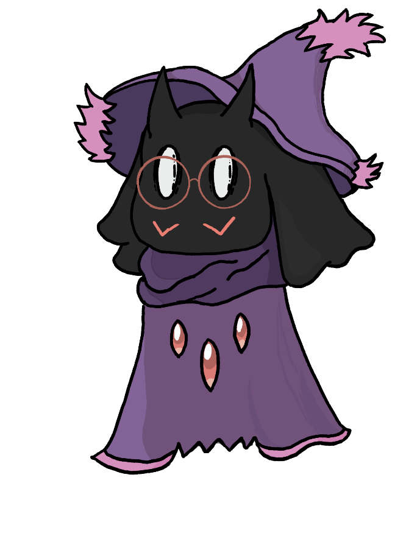

mondo2123.com


Welcome!
The DSi was cool
But I use my 3DS more often nowadays
I tried fixing my DSi in order to play my DS games in a native resolution.
However I don't have a soldering iron :/
Blog 21/11/26
This is the first blogpost on my dsi themed website :D
The DSi was cool, but I use my 3DS more often nowadays
I tried fixing my DSi in order to play my DS games at native resolution.
However I don't have a soldering iron :/
I also modded a psp.
Playing ps1 games on it is fun :)
So far I played THPS 2, Silent Hill, jojos, parappa and the lain game
And a lot of Tony Hawk Underground 2 remix.